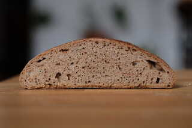

Weizenvollkornbrot mit Sauerteig
Ich backe fast ausschließlich Vollkornbrote. Allerdings gibt es bei Vollkornbroten einige Schwierigkeiten, die nur mit viel Erfahrung und Ausprobieren zu meistern sind. Zum einen übergären Vollkornteige sehr schnell, da in der Schale des Korns Enzyme enthalten sind, die die Fermentierung beschleunigen. Desweiteren haben die Schalenanteile des Vollkornmehls so scharfe Kanten (auch bei sehr fein gemahlemen Vollkornmehl), dass sie die Glutenstruktur, die man so mühsam durch dehnen und falten aufgebaut hat, einfach durchschneidet.
Eine einfache Lösung ist es, die Schalenanteile herauszusieben, da diese größtenteils nicht so fein sind wie die Mehlanteile. Es wäre allerdings schade, nicht nur wegen des Abfalls, sondern auch aufgrund der in den Schalen enthaltenen Nährstoffe, die das Vollkornmehl so gesund machen, die Schalenanteile einfach nicht zu verbacken.
Deswegen kann man die Schalenanteile als Quellstück in den Teig integrieren, nachdem man mit dem gesiebten Mehl eine schöne Glutenstruktur aufgebaut hat. Auf diese Idee bin ich nicht selbst gekommen. Dieses Rezept ist inspiriert und angelehnt an dieses und dieses Rezept. Durch das Quellstück kommt zudem auch nochmal mehr Flüssigkeit in den Teig, was die Krume weicher und lockerer macht und zudem das Brot länger frisch hält. Win-Win also.
 Das Rezept funktioniert auch wunderbar mit Dinkel.
Das Rezept funktioniert auch wunderbar mit Dinkel.
Sauerteig
- 20 g Anstellgut, aktiv
- 50 g gesiebtes Weizenvollkornmehl
- 80 g Wasser, warm
Autolyse
- 375 g gesiebtes Weizenvollkornmehl
- 260 g Wasser, warm
Brühstück
- 75 g ausgesiebte Kleie
- 150 g Wasser, kochend
Hauptteig
- Sauerteig
- Autolyse
- Brühstück
- 10 g Salz
- 10-20 g Wasser
Morgens
Für dieses Rezept habe ich 500 g Weizenvollkornmehl gesiebt. Mit meinem feinen Sieb ergibt das 425 g Mehl und 75 g Kleie. Falls bei dir das Verhältnis nicht ganz passt, mische vom einen soviel in das andere, sodass es den angegebenen Mengen entspricht.
Alle Zutaten für den Sauerteig mischen und an einem warmen Ort 2-3 Stunden aufgehen lassen, dann für 8 Stunden im Kühlschrank weitergehen lassen. Dies verhindert Übersäuerung des Sauerteiges.
Das kochende Wasser über die ausgesiebte Kleie gießen und mit einem Löffel zügig vermischen. Abgedeckt abkühlen lassen.
Nachmittags
Alle Zutaten für den Hauptteig bis auf das Brühstück und das Wasser in eine Schüssel geben. Mit den Händen oder einer Maschine einigen Minuten kneten, dabei ggf. das restliche Wasser hinzugeben. Mehr Wasser macht den Teig weicher und schwerer zu handhaben, aber am Ende auch luftiger. Der Teig sollte weich, aber nicht flüssig sein.
De Teig an einem warmen Ort 2 Stunden gehen lassen und dabei 3 mal alle 30 Minuten dehnen und falten. Vor dem zweiten Faltvorgang wird das Brühstück eingearbeitet.
Dazu wird die "Lamination" Methode angewandt: Den Teig auf eine leicht angefeuchtete Arbeitsfläche geben und mit feuchten Händen ganz dünn ausziehen, etwa auf eine Größe von 40 mal 40 cm. Der Teig kann gerne an einigen Stellen hauchdünn sein, er sollte nur nicht reißen. Nun auf dem Teig das Brühstück verteilen und vorsichtig mit einer Teigkarte verschmieren, sodass auf dem gesamten Teig eine gleichmäßige Kleieschicht ist. Nun den Teig ganz vorsichig, sodass er nicht reißt, von den Seiten in die Mitte falten und dann wieder in die Schüssel zurück legen.
Der dritte Faltvorgang erfolgt wieder wie gewohnt in der Schüssel. Dabei ist es okay, wenn an einigen Stellen das Brühstück noch in Schichten zwischen dem Teig liegt und nicht vollständig eingearbeitet ist.
Nach der Stockgare den Teig auf eine Arbeitsfläche geben und vorsichtig ohne Mehl rundwirken. Nach einer 10-minütigen Ruhepause (währenddessen kann man die Schüssel abspülen und das Gärkörbchen bemehlen) den Teig bemehlen, vorsichtig wenden und zu einer straffen Kugel formen. Vorsichtig mit dem Schluss nach oben (also der glatten Seite nach unten) in ein rundes Gärkörbchen legen.
Den Gärkorb über Nacht im Kühlschrank bei 5 Grad ruhen lassen, alternativ bei Raumtemperatur 1-2 Stunden.
Nach der Stückgare den Ofen auf 250 Grad aufheizen, das Brot dann 20 Minuten mit Dampf bei 250 Grad und 35 Minuten bei 220 Grad fertig backen.
